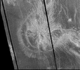

{kind=link}
{kind=link}
 Magellan's images show a wide variety of interesting and unique features
including pancake volcanoes (left)
which seem to be eruptions of very thick lava
and coronae (right)
which seem to be collapsed domes over large magma chambers.
Magellan's images show a wide variety of interesting and unique features
including pancake volcanoes (left)
which seem to be eruptions of very thick lava
and coronae (right)
which seem to be collapsed domes over large magma chambers.
Venus is the second planet from the Sun and the sixth largest. Venus' orbit is the most nearly circular of that of any planet, with an eccentricity of less than 1%.
orbit: 108,200,000 km (0.72 AU) from Sun
diameter: 12,103.6 km
mass: 4.869e24 kg
The New Solar System
Summarizes what we've learned from interplanetary explorations in the last 25 years. My primary reference for The Nine Planets.
Venus Revealed
The
latest results from Magellan in an accessible and easygoing book.
Covers mythology and history of our "sister planet" as well as up to
date science and a history of the Magellan project.
Venus in Transit
Fascinating account of past transits and the woes that befell those involved.
Venus (Greek: Aphrodite; Babylonian: Ishtar) is the goddess of love and beauty. The planet is so named probably because it is the brightest of the planets known to the ancients. (With a few exceptions, the surface features on Venus are named for female figures.)
Venus has been known since prehistoric times. It is the brightest object in the sky except for the Sun and the Moon. Like Mercury, it was popularly thought to be two separate bodies: Eosphorus as the morning star and Hesperus as the evening star, but the Greek astronomers knew better.
Since Venus is an inferior planet, it shows phases when viewed with a telescope from the perspective of Earth. Galileo's observation of this phenomenon was important evidence in favor of Copernicus's heliocentric theory of the solar system.
The first spacecraft to visit Venus was Mariner 2 in 1962. It was subsequently visited by many others (more than 20 in all so far), including Pioneer Venus and the Soviet Venera 7 the first spacecraft to land on another planet, and Venera 9 which returned the first photographs of the surface (left). Most recently, the orbiting US spacecraft Magellan produced detailed maps of Venus' surface using radar (above).
Venus' rotation is somewhat unusual in that it is both very slow (243 Earth days per Venus day, slightly longer than Venus' year) and retrograde. In addition, the periods of Venus' rotation and of its orbit are synchronized such that it always presents the same face toward Earth when the two planets are at their closest approach. Whether this is a resonance effect or merely a coincidence is not known.
Venus is sometimes regarded as Earth's sister planet. In some ways they are very similar:
The pressure of Venus' atmosphere at the surface is 90 atmospheres (about the same as the pressure at a depth of 1 km in Earth's oceans). It is composed mostly of carbon dioxide. There are several layers of clouds many kilometers thick composed of sulfuric acid. These clouds completely obscure our view of the surface. This dense atmosphere produces a run-away greenhouse effect that raises Venus' surface temperature by about 400 degrees to over 740 K (hot enough to melt lead). Venus' surface is actually hotter than Mercury's despite being nearly twice as far from the Sun.
There are strong (350 kph) winds at the cloud tops but winds at the surface are very slow, no more than a few kilometers per hour.
Venus probably once had large amounts of water like Earth but it all boiled away. Venus is now quite dry. Earth would have suffered the same fate had it been just a little closer to the Sun. We may learn a lot about Earth by learning why the basically similar Venus turned out so differently.
Most of Venus' surface consists of gently rolling plains with little relief. There are also several broad depressions: Atalanta Planitia, Guinevere Planitia, Lavinia Planitia. There two large highland areas: Ishtar Terra in the northern hemisphere (about the size of Australia) and Aphrodite Terra along the equator (about the size of South America). The interior of Ishtar consists mainly of a high plateau, Lakshmi Planum, which is surrounded by the highest mountains on Venus including the enormous Maxwell Montes.
Data from Magellan's imaging radar shows that much of the surface of Venus is covered by lava flows. There are several large shield volcanoes (similar to Hawaii or Olympus Mons) such as Sif Mons (right). Recently announced findings indicate that Venus is still volcanically active, but only in a few hot spots; for the most part it has been geologically rather quiet for the past few hundred million years.
There are no small craters on Venus. It seems that small meteoroids burn up in Venus' dense atmosphere before reaching the surface. Craters on Venus seem to come in bunches indicating that large meteoroids that do reach the surface usually break up in the atmosphere.
The oldest terrains on Venus seem to be about 800 million years old. Extensive volcanism at that time wiped out the earlier surface including any large craters from early in Venus' history.

Magellan's images show a wide variety of interesting and unique features
including pancake volcanoes (left)
which seem to be eruptions of very thick lava
and coronae (right)
which seem to be collapsed domes over large magma chambers.
The interior of Venus is probably very similar to that of Earth: an iron core about 3000 km in radius, a molten rocky mantle comprising the majority of the planet. Recent results from the Magellan gravity data indicate that Venus' crust is stronger and thicker than had previously been assumed. Like Earth, convection in the mantle produces stress on the surface which is relieved in many relatively small regions instead of being concentrated at plate boundaries as is the case on Earth.
Venus has no magnetic field, perhaps because of its slow rotation.
Venus has no satellites, and thereby hangs a tale.
Venus is usually visible with the unaided eye. Sometimes (inaccurately) referred to as the "morning star" or the "evening star", it is by far the brightest "star" in the sky. There are several Web sites that show the current position of Venus (and the other planets) in the sky. More detailed and customized charts can be created with a planetarium program.
On June 8 2004, Venus will pass directly between the Earth and the Sun, appearing as a large black dot travelling across the Sun's disk. This event is known as a "transit of Venus" and is very rare: the last one was in 1882, the next one is in 2012 but after than you'll have to wait until 2117. While no longer of great scientific importance as it was in the past, this event will be the impetus for a major journey for many amateur astronomers. For all the details see Fred Espenak's site.
 ... Sun
... Mercury
... Venus
... Earth
... Data
... Sun
... Mercury
... Venus
... Earth
... Data